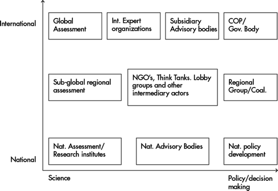

7.1 Introduction
In the study of interactions between science and policy in sustainable development decision-making, the concept of boundary work has recently emerged as a promising approach which focuses on the social processes at the boundary between the production of scientific and other types of knowledge as well as decision-making processes. The concept goes against earlier representations of the science-policy interface which are based on science and policy as distinct and separate worlds depicting science as the world of neutral and independent facts and policy making as the world of values. Instead of questioning how scientific knowledge is best transferred into the policy domain in order to ‘inform’ politics, boundary work focuses on the various types of interactions which take place in the sphere between science and politics. This opens the ‘black box’ of the science policy interface as a simple line across which knowledge must be transferred. It also questions the implicit assumption that such transfers can take place in a manner that is value neutral and without modification of knowledge content. Furthermore, boundary work assumes bidirectional exchanges and discourse between knowledge production and policy making, leading to the notion that science and social order are co-produced in mutually interdependent processes rather than independent social domains.
While the concept is originally developed in the context of studying science-policy interactions in national decision-making processes, it has also been effectively applied in the context of international decision-making on sustainable development. In their evaluation of the effectiveness of scientific assessments in influencing international decision-making on environmental issues, Mitchell et al. note that assessments
have influence to the extent that they involve long-term dialogue and interactions in which potential users of an assessment educate scientists about their concerns, values priorities, resources and knowledge of the problem, while scientists educate potential users about the nature causes, consequences and alternatives for resolution of the problem at hand as well as the ways such knowledge is arrived at. Co-production implies that assessments are influential to the extent they are bidirectional, with science shaping politics, but also politics shaping science. (Mitchell et al. 2006: 324)
In their earlier review of knowledge systems for sustainable development, Cash et al. (2003) find that
those systems that made a serious commitment to managing boundaries between expertise and decision-making more effectively linked knowledge to action than those that did not. Such systems invested in communication translation and/or mediation and, thereby more effectively balanced salience, credibility and legitimacy in the information they produced. (Cash et al. 2003: 8089)
Both of these conclusions are based on the analysis of large numbers of case studies, many of which have used the concept of boundary work as a heuristic guide or as an analytical lens through which to evaluate the effectiveness of specific assessments and other knowledge producing processes in influencing international decision-making on environmental issues.
This contribution will explore the application of the boundary work concept in a broader sense to describe the work of the various types of institutions, actors and processes which populate the space between science and policy on the international level. It will also examine their contributions to managing the boundary, and the interrelations among them. The following section reviews the origins and key features of the concept. Section 7.3 discusses its application to interactions between science and policy making both in general terms, as well as with a view to adopting a more systemic perspective which captures the diversity of institutions and actors involved in boundary work at the international level. Section 7.4 proposes complementing boundary work with a configuration approach which captures this diversity and directs attention to the interactions between the multiple processes involved.
7.2 Boundary Work: The Concept and Its Origins
Thomas Gieryn (1983) describes the phenomenon of boundary work as
ideological efforts by scientists to distinguish their work and its products from non-scientific activities […by attributing…] selected characteristics to the institution of science [(…)] for purposes of constructing a social boundary that distinguishes some intellectual activities as non-science. (Gieryn 1983: 782)
Based on an analysis of such demarcation efforts of scientists against religion, ‘pseudo-sciences’ defend the autonomy of science against efforts to restrict its activities in the name of national security. Indeed, Gieryn shows that boundary work is a rhetorical style which can be used by ‘ideologists of a profession or occupation’ to: expand authority or expertise into domains claimed by other professions or occupations; monopolise professional authority and resources in order to exclude rivals; protect autonomy over professional activities by excluding members for consequences of their work; and may even be used within science to demarcate boundaries between different disciplines (ibid.: 791). He further concludes that boundaries of science are ambiguous because: the characteristics attributed to science are sometimes inconsistent; boundaries are contested by scientists with different professional ambitions; and boundaries result from the simultaneous pursuit of separate professional goals requiring boundaries that are built in different ways (ibid.: 792).
In short, Gieryn’s work shows that the original concept of boundary work is seen as a rhetorical tool applied by scientists primarily to further the interest of their profession rather than establishing unambiguous, scientifically grounded definitions of what constitutes science or how science is defined in a certain discipline. Despite the fact that they are applied by scientists, the establishment of boundaries cannot necessarily be considered a scientific exercise in itself.
Sheila Jasanoff (1987, 1990) applies the concept of boundary work to investigate interactions between scientists and policy makers. She starts from the observation that science has been able to maintain its status as ‘provider of truths’ even though it is widely recognised that knowledge is indeterminate and can be interpreted in many ways, because of the adherence to shared ‘Mertonian’1 norms ‘that foster cohesiveness in science, even though its practitioners come from divergent geographic, cultural or linguistic backgrounds’ (Jasanoff 1987: 196). The authority derived from these norms is reinforced by a number of rules which govern the practice of science such as high standards for entry into the scientific professions, rules for quality control exercised by ‘invisible colleges’, ‘research circles’ or other informal networks that control the diffusion of scientific knowledge’ (ibid.). This cognitive authority of science comes under pressure when scientists are called upon by policy makers to provide advice in areas which are at the frontiers of science, and where knowledge is particularly uncertain and indeterminate resulting in a most fragile consensus among scientists (ibid.: 197).
Earlier models depict science advice as a unidirectional process of scientists delivering facts or ‘truth’ to decision makers as basis for informed decisions about issues affecting, or affected by the physical laws of nature. In direct contrast to this, Jasanoff develops a model in which
‘truth’ emerges from an open and ritualized clash of conflicting opinions, rather than from the delicate and informal negotiations that characterize fact-finding in science. (ibid.)
According to her model, legitimacy in decision-making is achieved through the ‘public reconstruction of the scientific basis for regulation’. The process gives rise to competing claims of authority between science and policy making with regard to the interpretation of scientific findings, which in turn challenges the disinterestedness and certainty of science. The result is a ‘partial removal of cognitive authority’, which renders explicit the assumptions and uncertainties embodied in scientific research and thereby allows policy makers to show that ‘the interpretation of indeterminate facts reflects the public values embodied in legislation as well as the norms of the scientific community’ (Jasanoff 1987: 198).
While the process of science’s public deconstruction followed by reconstruction of the rationale for decision-making in the policy arena increases the legitimacy of policy making, it challenges the self-image of science as a disinterested search for truth. Furthermore, the public demonstration of uncertainty and disunity among scientists may damage the public image of scientists and may lead to questions about whether or not they truly merit the status as well as the symbolic and material rewards which they enjoy in society. To protect themselves from such negative impacts, scientists have to establish and continuously reinforce the boundaries between science and policy. The boundary is thus a contested space around which scientists and policy makers compete for cognitive authority over the interpretation of indeterminate facts. In essence, the contested boundary arises out of different views over how much decision-making power should be granted to scientists in areas where scientific knowledge is insufficient for decision-making – either because of lack of data and uncertainty, or because of the indeterminacy of knowledge. This gives rise to competing claims which make it impossible to take ‘legitimate decisions’.
In her 1987 paper, Jasanoff investigates three ‘contested boundaries’ (or more precisely three strategies to establish the boundary between science and politics, and thus the distribution of decision-making authority): trans-science, risk assessment and peer-review. Trans-science addresses the grey zone between science and policy, which is characterised by questions such as ‘which can be asked of science and yet which cannot be answered by science’ (Jasanoff 1987: 201; citing Weinberg 1972). Scientists argue that the cognitive indeterminacy revealed by the policy making process lies outside of ‘real’ science in the realm of trans-science. This separation is used to argue that, while policy makers may claim authority over issues of trans-science, science itself should remain the undisputed preserve of scientists. Therefore deconstructionist techniques should only be regarded appropriate for issues of trans-science, not genuine science. Jasanoff shows that Weinberg’s main objective is to ‘shield science against the taints of subjectivity, bias and disharmony that it acquires in the policy environment’. In her conclusion, Jasanoff states that this approach ignores the key procedural concerns of policy making, most importantly the question of who should decide on issues which fall within the boundaries of science and policy, that is, where science is unable to provide unambiguous answers to the questions that policy makers have to address.
Similarly, Jasanoff argues that risk assessment and peer review are used to advance particular views about the extent to which scientists should control decision-making at the frontiers of knowledge. Peer review of suggested regulation by scientific experts, for example is often demanded by the industry in order to shift the balance of decision-making power away from regulatory agencies. Indeed, from the perspective of the industry, these agencies may well be biased towards excessive or overly strict regulation. Because of their impact on the distribution of decision-making power, boundary strategies can be instrumentalised by those who have stakes in the regulatory decisions at stake.
These considerations give rise to further research on the activities which take place at the boundary between science and policy making and the actors and organisations involved in such work. In her 1990 book ‘the fifth branch’ Jasanoff explores the work of science advisers in policy making (Jasanoff 1990). Here, Jasanoff makes the case for a more detailed analysis of the processes which determine decision-making and the role that science has within these processes. She depicts two schools of thought with regards to the role of science in decision-making. The first school of thought is the technocratic view, according to which, bureaucrats are technically incapable of distinguishing ‘good’ from ‘bad’ science and therefore call for a greater involvement and influence from scientists in the decision-making process. The second school of thought is the democratic view, which holds that decision makers fail to incorporate a sufficient range of values in their decision-making, favouring the inclusion of a broader set of viewpoints in the decision-making process beyond narrowly technical viewpoints. In line with the idea that contending views over the role of science in decision-making represent a struggle of different interests over discretion in decision-making, Jasanoff observes that commercial and industrial interests favour the technocratic view, while interest groups such as environmental, labour and consumer movements support the democratic view (Jasanoff 1990: 15–16).
Based on a review of the work carried out by scientific advisory committees in US regulatory agencies, Jasanoff derives a number of conclusions with regard to the characteristics of successful boundary processes. First she highlights that what is considered to be ‘good’ science in decision-making is the result of negotiations, since ‘when stakes are high, no committee of experts, however credentialed, can muster enough authority to end the dispute on scientific grounds’ (Jasanoff 1990: 234). Negotiation is at the heart of the construction of regulatory science, which highlights the role of advisory committees as forums where scientific and political conflicts can be negotiated simultaneously. The role of the scientific expert is then to stabilise the results of negotiation against further attempts of deconstruction through his or her ability to validate research, certify scientific methods, define standards of adequacy of scientific evidence and approve inferences made from scientific studies and experiments (ibid.: 237). The conduct of scientific advice as negotiation provides legitimacy to the outcome.
In order to be successful, boundary work should be non-adversarial to avoid an unproductive deconstruction of science and fostering of appearance of capture (ibid.: 246). Committee membership should reflect disciplinary breadth, which may be challenging for small committees. The advisers populating committees also need to be more than mere technical experts to be able to transcend disciplinary boundaries, synthesise knowledge from several fields, and to understand the limits of regulatory science and the policy issues confronting the agency (ibid.: 243). These requirements may make it difficult to find a sufficient number of policy advisers, which may lead to conflicts of interests resulting from long-term and encrusted relationships between agencies and a small group of skilled advisors. Finally, Jasanoff notes that the advisory process must recognise that scientific knowledge is in perpetual flux and demands constant renegotiations, which in turn calls for allowing more flexibility in the rules and norms which govern the work of advisory committees than those of administrative decision-making. The problem of advisory processes then, is not so much to protect decision-making from capture by scientific experts who are influenced by technocratic interests, but to ‘harness the collective expertise of the scientific community, so as to advance the public interest’ (Jasanoff 1990: 250).
In short, the work of Gieryn, Jasanoff and their colleagues directs attention towards the processes of negotiating the boundary between science and policy as well as the rules and organisations which structure such processes, including the rules for selecting participants of advisory committees, structuring the discourse within these committees, and for the type of outputs expected from them.
Further research concentrates on the role of boundary work and how it stabilises the boundary between science and politics. This is achieved through investigating the role of boundary organisations and their outputs, known as boundary objects or standardised packages. The rationale for conducting such research is, on the one hand, the concern that constructivist arguments about the contingency of these boundaries could lead to a dangerous erosion ‘of the cognitive authority of science by legitimizing relativism’, and a fear about a decay of the mutually productive relationship between science and liberal democracy (Guston 1999: 89). On the other hand, scholars believe that by clearly portraying science as it is practiced, constructivist accounts can help to improve the position of science in society and ‘recover the human face beneath science’s rationalist mask’ (ibid.).
Star and Griesemer (1989) introduce the notion of ‘boundary objects’ as common products of negotiations at the boundary between science and policy. Boundary objects are knowledge products, such as reports, methodologies or interpretative frameworks which are ‘both plastic enough to adapt to local needs and constraints of several parties employing them, yet robust enough to maintain a common identity across sites’ (Star and Griesemer 1989). A similar concept is that of ‘standardized packages’ which is a means to ‘define a conceptual and technical work space [… by combining] boundary objects with common methods in more restrictive but not entirely definitive ways’. Standardised packages seek to homogenise and facilitate repeated interactions among practitioners from both sides of the boundary between different social worlds while maintaining their integrity within their respective worlds (Guston 1999, citing Fujimura 1992). In this way, they effectively function as interfaces for the translation and transfer of different kinds of knowledge for the purpose of collaborative knowledge development.
David H. Guston further develops the concept of boundary organisations using principle agent theory. He suggests that the relationship between policy makers and scientists can be represented as a contractual relationship, similar to that between other economic agents, in which policy makers ‘hire’ researchers to deliver expertise on specified issues. The principal is faced with the problems of adverse selection and moral hazard. Adverse selection may lead to the identification of scientists pursuing a specific agenda in relation to the policy problem at hand, whereas moral hazard describes the agent’s incentive to cheat or shirk or otherwise exploit the principal’s lack of information. To address these problems, the principal will put into place mechanisms for monitoring the agent’s behaviour and for verifying the results of his research. Such mechanisms include procedures for accountability, in particular financial accountability, but will also lead to the development of boundary objects and standardised sets. In Guston’s case study of innovation and technology transfer originating from the US National Institute of Health, boundary objects include procedures for ‘innovation disclosure’ which facilitate the collaborative identification of research results with innovative or market potential, as well as incentives and procedures to facilitate the application for patents. The collaboration between governmental research laboratories and non-federal actors such as private firms, is governed by Cooperative Research and Development Agreements (CARDAs). Indeed, Guston identifies these as the key standardised set of the boundary institutions in his case study. Based on these observations Guston identifies the following shared characteristics of boundary organisations (Guston 1999: 93):
- ‘They provide a space that legitimizes the creation and use of boundary objects and standardized packages;
- They involve the participation of both principals and agents, as well as specialised (or professionalised) mediators; and
- They exist on the frontier of two relatively distinct social worlds with definite lines of responsibility and accountability to each’.
The specialised mediators in his case study are technology transfer experts who oversee the collaborative process of technology transfer and report to the governmental agent. The government creates incentives for them which directly depend on the effectiveness of technology transfer, thus establishing a new intermediary agent who is himself in a principal-agent relationship with the researcher.
To summarise, the emergence of the boundary concept has shifted the way in which science and knowledge are perceived in decision-making. They are no longer viewed in terms of the ‘pipeline’ and ‘information deficit’ models which presume that knowledge is produced by and delivered to decision makers very much like a commodity or resource towards a model of co-creation or joint fact finding, in which knowledge holders and decision makers work together to develop common understandings of problems and available pathways of action as a basis for legitimate and socially robust decision-making. The boundary model directs attention to the procedural aspects of knowledge creation and use for decision-making. Rules for participation and balance of influence emerge as important factors for successful boundary work next to the mere quality and appropriateness of the knowledge at hand.
7.3 Boundary Work in International Decision-Making in Sustainable Development
Most of the research on boundary work has thus far been carried out in the national context, with the majority of studies analysing science-policy interactions in US decision-making processes. This raises the question of whether the concept can be usefully applied to boundary work on the international level. A number of differences come to mind with regards to both the representation of ‘policy’ and ‘science’ as well as in the institutions which frame the interactions. These differences may not be in line with the explicit and implicit assumptions of the boundary work.
Miller (2001) discusses three weak assumptions of the boundary concept which influence its applicability to the international context. First, the concept ignores the diversity of institutions and practices which exist within both science and politics. Scientific practices and discourses vary with disciplines, institutions and networks, and scientists within disciplines frequently disagree about the representation of their knowledge and the implications derived from it. Similarly, perceptions, policy styles and forms of interaction vary across institutions and sectors. On the national level, the assumption of uniformity may nevertheless be acceptable, since decision-making on sustainable development takes place within policy domains which have distinct styles of policy politics – a specific combination of cognitive styles and interaction. Over time, this combination generates particular public epistemologies about the validity and use of different types of knowledge within the domain (Hoppe 2010: 181). On the international level, however, boundary work must span the diversity of scientific and political institutions from a large number of countries and policy domains which interact with each other. This leads to confrontations not only between different national policy styles, framings and policy theories, but also between diverse and culturally determined perceptions as well as different ways of identifying and describing problems in different languages (ibid.).
Second, the concept oversimplifies the boundary between science as a ‘fine bright line’ using inadequate representations of pure science and pure politics. This ignores the diversity of institutions that exist between the two sides which are neither science nor politics ‘but combine elements of the two in remarkable different ways’. Miller illustrates this diversity with a map of institutions involved in boundary work on climate change. The map (Fig. 7.1) includes both institutions inside and outside the formal climate change regime, as well as US national institutions. The entire landscape includes 11 institutions, each of which produces its own ‘amalgamation of norms, practices, discourses and knowledges’ on climate change (Miller 2001: 485, citing Jasanoff and Wynne 1998).
Fig. 7.1
US and international Organisations involved in boundary work on climate change (Source: Jasanoff and Wynne (1998)). Note: NCAR = National Center for Atmospheric Research; WMO = World Meteorological Organisation; UNEP = U.N. Environment Programme; IPCC = U.N. Intergovernmental Panel on Climate Change; IGBP = International Geosphere-Biosphere Programme; SBSTA = U.N. Framework Convention on Climate Change’s Subsidiary Body for Scientific and Technological Advice
The third weakness identified by Miller is that the boundary concept presents an overly static view of science and politics. The last two decades have seen the emergence of a vast array of new institutions involved in boundary work on the international level which has led to a constant rearrangement of institutions and how they relate to each other. At the same time ‘definitions and standards for expertise are deeply contested across cultural and geopolitical divides, as are notions of appropriate political institutions for carrying out public sector management for the planet as a whole’ (Miller 2001: 485). This means that institutional arrangements are constantly in flux and there is rarely a negotiation process which ends with the same constellation of institutions involved with which it started.
One may add a fourth weakness here, which becomes relevant if one looks at boundary in an intergovernmental context rather than from the perspective of domestic engagement in international decision-making, as Miller does. Boundary work on the international level takes place within the constraints and practices of intergovernmental decision-making. This means that the discourses and processes of boundary work will always be affected by the rules for representation and decision-making which characterise political processes on the international level. Since states are the main actors of multilateral decision-making, any form of boundary work has to provide for adequate codes of representation in order to be considered legitimate. This has a number of implications for the conduct of boundary work in an international context. First, the criterion of representation of states competes with the criterion of representation of relevant knowledge and scientific expertise. Subsidiary bodies and smaller expert panels in particular suffer from difficult debates about balance in representation either on a country or regional level (Kohler et al. 2011). In most cases, the concern about representation trumps the concern for diversity and relevance of expertise of the individuals that who will be invited as experts. The need for representation limits both the number of experts who can participate from a given country or region, as well as the individuals chosen by countries. The more politicised an issue is, the more countries will tend to send diplomats rather than experts.
Assessment processes attempt to circumvent this problem by establishing criteria for the scientists and experts to be nominated by countries. However many countries will select their participants in a way which ensures that the contribution from those experts is not against their political positions in the negotiation process at hand. Any institution or forum involved in boundary work on the international level will in one way or another be affected by the need to ensure national representation as well as representation with regard to different types of expertise and knowledge. In many cases the intergovernmental negotiation setting will act as a bias which will give primacy to the national requirement.
The second constraint arises from the mode of decision-making in international fora. The great majority of intergovernmental decision-making processes require unanimity by all member states to take decisions. Rules of procedure which allow for majority voting are the exception and are only established within a framework that clearly identifies which decisions can be taken by voting. An example can be seen with repetitive operational decisions such as subjecting new species to the trade restrictions under CITES or adding new chemicals to the list of substances to be monitored by the Rotterdam Convention on Hazardous Materials. In theory, the unanimity rule makes it possible for a single country to block consensus, even if an acceptable amalgamation of values and knowledge has been achieved among all other participants. In reality, the pressure to achieve an outcome often leads to a race to the bottom in terms of the substantive content of an agreement as the majority accepts to water down elements of a decision in order to accommodate minority concerns. Scholars in international relations have identified the pattern that international agreements tend to be either ‘broad and shallow’, meaning that many states participate in an agreement with limited impacts; or ‘narrow and deep’, meaning that a small group of states participates in an agreement which yields large benefits from cooperation (Barrett 1999: 525). If one can consider the breadth and depth of an agreement as preliminary measures of the success of boundary work during the negotiation phase of an agreement, then one can expect that the logic of negotiation under the unanimity condition creates an additional hurdle for boundary work on those issues which are most difficult to agree upon.
In decision-making bodies which operate under the one-country-one-vote and unanimity principles, the main participants are country delegates who are bound by the instructions of their capitals. The instructions themselves are the result of processes of policy development and decision-making that may have included boundary work to varying extents, depending on the practices, cognitive styles and modes of interaction of the policy domains involved. Delegates have thus limited flexibility to accommodate the concerns of others both in terms of bargaining as well as with regard to their ability to embrace new concepts and boundary objects that may be developed in the course of the negotiation or presented by other participants, such as civil society actors. On the other hand, delegates’ instructions usually do include some flexibility for making concessions in order to be able to strike mutually agreeable deals with their opponents. Whether these flexibilities can be used for the creation of new boundary objects again depends on the political culture and practices in different countries. Some countries give their delegates a lot of autonomy to decide how they will represent the interests of their countries, for instance by providing instructions that are formulated in terms of general objectives. In contrast, other delegates must work with narrowly formulated options for operational text. Delegates from some countries have to ask permission from their capitals for even minor changes, while other countries select their delegations such that the relevant policy domains and fields of expertise are represented at the meeting to allow for the delegation to react to new proposals which could not be anticipated. A typical phenomenon at the final stages of negotiations are delegates who make hectic last minute phone calls to get permission to agree to the final deal, which often involves explanations of a new compromise formula.
The situation is further complicated by the fact that many countries negotiate in coalitions or regional blocks. This involves another level of decision-making at which boundary work may or may not occur. The amalgamation of individual positions inevitably involves further discussions on facts and values within coalitions and regional groups. However, similar to the international level negotiations, it depends on the mode of decision-making and the flexibility of the delegates’ instructions as to whether the result will lead to a further increase in the robustness and acceptance of the common position or a watering down of the agreement towards a lowest common denominator.
In assessment processes, the practice of ‘negotiating scientific consensus’ can lead to oversimplification and inadequate reduction of the complexity of both the science and the values that are behind the effort-reduction to the lowest common denominator replaces amalgamation. While assessment processes publish comprehensive reviews of the state of the art in science, including a consideration of different viewpoints and in some cases even contradictory findings, what gains traction in the policy making process are the severely reduced summaries for policy makers – sometimes even only parts thereof. Only these can be considered as outcomes of completed boundary work, since only these parts become the basis of decision-making. On the other hand, the knowledge produced by assessment processes becomes the basis for boundary work in numerous other institutions and forums that act as additional channels through which they can have an indirect impact. IPCC assessment reports, for instance, are the most important reference for making the case for action against climate change through advocacy groups or policy think tanks. These actors engage themselves in boundary work at different levels which has an influence on national positions as well as the course of the negotiations in international decision-making forums. Many of their outputs should thus be seen as intermediary boundary objects which enable boundary work in other channels.
The third constraint of boundary work emerges from the negotiation mode which prevails in the majority of international decision-making forums. Any outcome of international negotiations is either designed as international law, or will be interpreted in the context of existing international law and obligations. Soft law instruments, such as declarations or non-legally binding treaties and decisions for implementation have proven to exert substantial influence on policy making in many countries and, in many common law countries they can have a direct impact on court decisions. Therefore, many countries treat any negotiations as if the outcome would be legally binding, even if that is not provided for by the mandate, or the decision on the legal nature of an instrument will only be decided at the very end of a negotiation. This means that in the final stages, and often throughout the entire process, negotiations are led by legal, rather than scientific experts. Legal experts however will focus on legal issues, such as consistency with existing international laws and obligations, compatibility with national legal systems and legal clarity. This is often at the cost of scientific adequacy and relevance. Once negotiations have entered into the legal ‘codification’ mode, they tend to become less receptive to new knowledge and ideas, at least as long as this knowledge is communicated by non-legal actors. Furthermore, the final stages of a process are often marked by a decrease in trust among participants as confusion over legal concepts may lead negotiators to accuse others of trying to reverse previous agreements or of using existing decisions and other legal arguments strategically to their own advantage. The erosion of trust is further aided by the fact that countries become increasingly aware of the costs and benefits of proposed agreements and therefore switch to strategies of distributive bargaining: ensuring fairness in the distribution of costs and benefits takes primacy over the common objective of solving global problems.
The final stages of a negotiation are therefore carried out under the shadow of both existing law and the anticipated legal impact of the text under negotiation. Under certain conditions, this shadow can extend far into the early stages of a negotiation, thus leading participants to engage in distributive legal bargaining at a point in time when there has not yet been enough boundary work done to provide a basis for a successful completion of the negotiation. In other words, the amalgamation of facts and values is not yet sufficiently mature to withhold the erosion of trust in the process of legal bargaining.
This extension of the shadow of the law can occur for several reasons. One is the informal rule prevailing in many negotiating forums not to reopen text for discussion which has been previously agreed. Despite the formal rule that agreements are adopted as a package and thus ‘nothing is agreed until everything is agreed’, the request to make changes in agreed language is often interpreted as bad faith by other delegations. While this rule is a necessary convention to prevent legal negotiations from backlash and endless circles of revisiting the same issues, it can also prevent delegates from testing different framings and approaches during a negotiation to select the most suitable approach. What is more, when trust is low, some delegates will categorically disagree with any text on the table in order to ensure that they keep their options open until the very end. In extreme cases this practice can neutralise previous informal agreements, including any boundary objects which may have been embodied or referred to in the initial text.
Another factor is that boundary work and legal negotiations are often carried out under the auspices of the same institution, notably subsidiary bodies that provide advice to a governing body or conference of the parties of the same process. Without a mandate which clearly identifies the nature of the subsidiary body’s work and delimits it from the actual negotiation process, such bodies tend to transform into preparatory meetings for the actual negotiation process. If countries expect that the outcome of a subsidiary body will be a draft decision which may be difficult to reopen for further discussion, they will send legal experts rather than scientists to represent them in these processes. The longer the shadow of the law, the more reluctant countries will be to let non-legal experts speak and engage in an open form of discourse, for the fear that their proposals will become fixed into legal concepts that may be interpreted against their own interest or original intention.
To summarise, the intergovernmental setting and the shadow of the legal negotiations of international sustainable development decision-making have fundamental impacts on the way in which boundary work is conducted at the international level. Much more than in national decision-making processes, it must be recognised that boundary work is not a simple bridging process between science and policy that is carried out in a single locus, but that it is composed of many processes in a complex web of loci which deliver partial amalgamations of facts and values from different perspectives. These partial amalgamations are often complementary, but in many cases they compete, since they represent different configurations of values brought forward by different sets of stakeholders and scientists who have participated in the process.
Secondly, it must be recognised that the negotiation process is an integral part of boundary work on the international level. Similar to the inseparability of discussions on facts and values, international boundary work is inseparable from the multilateral negotiation process. Delegates as well as scientists will always be influenced by, or even pressured to, represent the positions of their countries. The degree to which representation influences the outcome of boundary work can be depicted as the distance from the actual negotiation process. The more influence a process of boundary work can be expected to have on a negotiation process, the stronger the participants’ bias towards their countries’ positions in the negotiation processes itself. The closer a boundary organisation is located to decision-making, the more politicised its deliberations will be.
7.4 From Boundary Work to Boundary Configurations
In order to account for these factors, it is useful to conceive of the boundary between knowledge production and decision-making in an intergovernmental setting as a two-dimensional space defined by the axes of science and policy as well as national and international processes (Fig. 7.2). The further to the right a process or institution is located, the more politicised it can be expected to be. The higher up it is situated, the stronger will be the constraints of representation in the conduct of boundary work. An exception may be the intermediary organisations which are depicted here in the middle of both axes. This group itself represents a large diversity of institutions which may or may not be internally organised according to representative principals. Such organisations may participate as experts in assessment processes, as observers or representatives of civil society or major groups in subsidiary bodies and negotiations. These organisations often provide different types of knowledge to boundary work in other institutions or processes, or are themselves loci of boundary work.

Fig. 7.2
Institutions and processes involved in boundary work on international sustainable development decision-making (compiled by the author)
The main assumption underlying this representation is that the boundary space is populated by different institutions and organisations which produce partial amalgamations of facts and values that are influenced by their position within the space as well as other factors such as membership, interests or ideological conceptions. This representation should also allow for the location of different institutions and processes involved in boundary work with regard to their position in terms of politicisation and constraints through presentation and negotiation in intergovernmental decision-making processes. This enables the development of a more differentiated conceptualisation of the types of processes and discourses taking place within these organisations and how these are influenced by their position. In addition, this also develops their relationships to one another. For instance, it may be possible to develop conjectures about the conditions under which institutions or actors occupying similar or overlapping positions within the boundary space will behave competitively or collaboratively. Similarly, one may ask under which conditions institutions positioned on opposite ends will complement each other. This is done either by delivering ‘compatible’ partial amalgamations of facts and values which can be consolidated into inclusive and robust decisions, or by further developing boundary objects provided by other actors in the space.
Figure 7.3 presents the configuration of institutions and processes involved in boundary work from a US perspective, based on the work of Jasanoff and Wynne (1998) presented in Fig. 7.2. It should be noted that the location of the different institutions is for illustration only. The exact locations would need to be determined based on extensive empirical research including a methodology for comparing the degree of politicisation in each organisation and the extent to which the work is influenced by the mode of representation. Nonetheless, some interesting questions can be asked based on this representation. The first is that of potential divergences between the mandate and the de facto impact of a boundary organisation. The IPPC, for example, is structured as a scientific assessment based on review and synthesis of relevant scientific information. Its reputation and the political nature of climate change issue, however, have the effect that its outputs have a much more direct impact on the negotiations than assessments in other areas. IPCC Scenarios and results are often cited by delegates and other actors in the negotiation process, and even if they are not intended to be policy prescriptive, they may turn out to have exactly that effect by locking in negotiations on a certain scientifically formulated target. An example of this impact is the 2° target for climate change put forward by many in the run-up to the Copenhagen climate change talks.
Fig. 7.3
Configuration of institutions and organisations involved in boundary work on international decision-making on climate change (Source: compiled by the author based on Jasanoff and Wynne (1998))
Another approach could be to compare the position, internal processes and outputs of IPCC and SBSTA. Despite the fact that both bodies are seen to be scientific in nature, their processes, outputs and impacts on the negotiations may vary considerably.
Comparison across issue domains could also be an interesting avenue to complement the concept of boundary work. Figure 7.4 provides an illustrative positioning of the main scientific institutions involved in boundary work on biodiversity decision-making. For simplicity, the representation considers only the major intergovernmental institutions involved, while displaying EU institutions to illustrate the positioning of regional groups. The main differences illustrated here are as follows: (1) the major scientific assessment (Millennium Ecosystem Assessment) spans the international and regional level through the inclusion of sub-global assessment processes on the basis of an inclusive stakeholder approach. (2) The new Intergovernmental Science-Policy Platform on Biodiversity and Ecosystem Services (IPBES) is, according to its mandate, positioned further to the right than IPCC. This is because its mandate is to evaluate the results of other assessments and provide recommendations on concrete policy options, rather than providing mere scientific synthesis. Its de facto impact may however be less significant than that of the IPCC because of the higher complexity of biodiversity issues and an overall lower politicisation of the issues at hand. The CBD’s SBSTTA on the other hand is more political than the UNFCCC’s SBSTA as it has evolved into a preparatory meeting for the Conference of the Parties rather than a body for scientific deliberation.2
Fig. 7.4
Illustrative configuration of institutions and processes involved in boundary work on biodiversity decision-making (Source: compiled by the author)
Finally, this illustration also displays additional processes of boundary work at the regional level, in this case within the European Union. They are carried out both in the network of European Environment and Advisory Councils (EEAC) as well as in regional coordination processes under the EU Council or the EU Commission.
These examples illustrate the potential of a configuration approach to a more systemic study of boundary work in international sustainable development decision-making. Such an approach would combine a number of theories and methods to expand and complement the concept of boundary work.
7.5 Conclusion
This chapter has explored the challenges and constraints of applying the concept of boundary work to interactions between knowledge production and international sustainable development decision-making. The analysis finds that, while the concept of boundary work has proven useful as a case-study approach, it must be complemented in order to gain a more systemic view of international science-policy interactions. Several conceptual weaknesses must also be addressed, including its inability to capture the diversity of institutions involved in boundary work at the international level and the implications and constraints of the modes of representation and negotiation present in boundary work in the context of intergovernmental decision-making. The chapter suggests the development of a configuration approach which allows the positioning of institutions involved in boundary work with regard to their degree of politicisation and mode of representation. Such an approach would yield a more systemic understanding of boundary work for international sustainable development decision-making. In addition it could guide the development of theories and specific hypotheses on how the positioning of institutions influences the processes of boundary work taking place within them, as well as their behaviour towards other boundary institutions and organisations.
Acknowledgements
This chapter greatly benefited from numerous discussions with my colleagues from the Earth Negotiations Bulletin in particular the comments by Pia Kohler, Alexandra Conliffe and Eugenia Recio. I am also indebteded to my colleagues at IASS for their critical comments and support. All remaining errors and inconsistencies are of course my fault alone.
Open Access. This chapter is distributed under the terms of the Creative Commons Attribution Noncommercial License which permits any noncommercial use, distribution, and reproduction in any medium, provided the original author(s) and source are credited.
References
Barrett SA (1999) A theory of full international cooperation. J Theor Polit 11(4):519–541CrossRef
Cash DW, Clark WC, Alcock F, Dickson NM, Eckley N, Guston DH et al (2003) Knowledge systems for sustainable development. Proc Natl Acad Sci U S A 100(14):8086–8091CrossRef
Fujimura JH (1992) Crafting science: standardized packages, boundary objects, and “translation”. In: Pickering A (ed) Science as practice and culture. Chicago University Press, Chicago, pp 168–211
Gieryn TF (1983) Boundary-work and the demarcation of science from non-science: strains and interests in professional ideologies of scientists. Am Sociol Rev 48(6):781–795CrossRef
Guston DH (1999) Stabilizing the boundary between us politics and science. Soc Stud Sci 29(1):87–111CrossRef
Hoppe R (2010) From “knowledge use” towards “boundary work”: sketch of an emerging new agenda for inquiry into science-policy interaction. In: In ’t Veld RJ (ed) Knowledge democracy: consequences for science, politics and media. Springer, Heidelberg, pp 169–185
Jasanoff S (1987) Contested boundaries in policy-relevant science. Soc Stud Sci 17(2):195–230CrossRef
Jasanoff S (1990) The fifth branch: science advisers as policy makers. Harvard University Press, Cambridge, MA
Jasanoff S, Wynne B (1998) Science and decisionmaking. In: Rayner S, Malone EL (eds) Human choice and climate change. Batelle Press, Columbus, pp 1–87
Kohler PM, Conliffe A, Jungcurt S, Gutierrez M, Yamineva Y (2011, in press) Informing policy: science and knowledge in global environmental agreements. In: Chasek PS, Wagner LM (eds) The roads from Rio: lessons learned from twenty years of multilateral environmental negotiations. RFF Press, an imprint of Taylor and Francis, New York
Merton RK (1973) The normative structure of science. In: Merton RK, King R (eds) The sociology of science: theoretical and empirical investigations. University Press, Chicago
Miller C (2001) Hybrid management: boundary organizations, science policy, and environmental governance in the climate regime. Sci Technol Hum Val 26(4):478–500CrossRef
Mitchell RB, Clark WC, Cash DW, Dickson NM (2006) Global environmental assessments: information and influence. MIT Press, Cambridge
Star SL, Griesemer JR (1989) Institutional ecology, ‘translations’ and boundary objects: amateurs and professionals in Berkeley’s museum of vertebrate zoology, 1907–39. Soc Stud Sci 19(3):387–420CrossRef
Weinberg A (1972) Science and trans-science. Minerva 10(2):209–222CrossRef
Footnotes
1
Introduced by Robert K, Merton, the Mertonian norms are a set of institutional priciples that describe the ‘ethos of modern science: Communalism (results of scientific research are common property of the scientific community); Universalism (all scientists can contribute to science regardless of race, nationality and gender); disinterestedness (scientists should not mix personal beliefs or activism with the presentation of their research results); originality (scientific claims must contribute new knowledge); and scepticism (validation through critical scrutiny). See: Merton (1973).